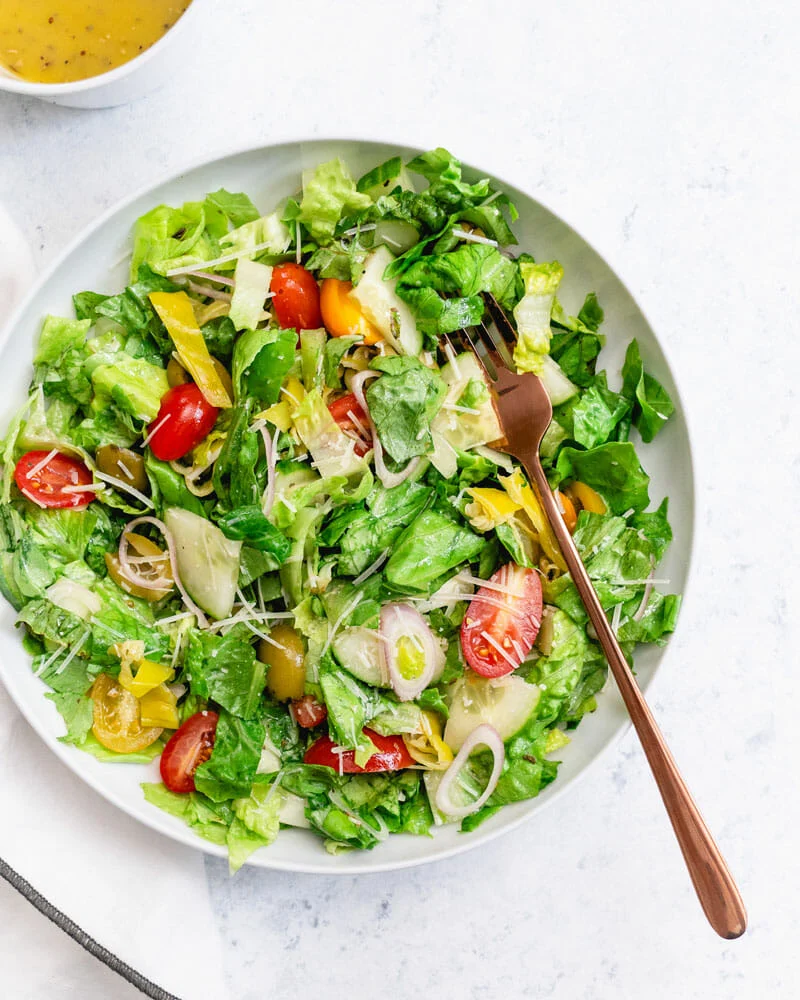

Mediterranean Chickpea Salad

Description
This Mediterranean-inspired chickpea salad is a refreshing and nutritious dish that combines the flavors of crisp vegetables, tender chickpeas, and tangy feta cheese. It's tossed in a zesty lemon-oregano vinaigrette that adds a burst of flavor to every bite. Perfect as a light lunch or a side dish for any meal.
Ingredients
- 2 cups cooked chickpeas (canned or cooked from dried)
- 1 cup cucumber, diced
- 1 cup cherry tomatoes, halved
- 1/2 cup red onion, finely chopped
- 1/2 cup Kalamata olives, pitted and halved
- 1/2 cup crumbled feta cheese
- 1/4 cup fresh parsley, chopped
- 1/4 cup fresh mint leaves, chopped
Steps
- In a large mixing bowl, combine the cooked chickpeas, diced cucumber, halved cherry tomatoes, chopped red onion, Kalamata olives, crumbled feta cheese, chopped parsley, and chopped mint leaves.
- In a separate small bowl, whisk together the extra-virgin olive oil, fresh lemon juice, dried oregano, minced garlic, salt, and pepper. This is your lemon-oregano vinaigrette.
- Gently toss all the ingredients in the bowl, ensuring that the vinaigrette is evenly distributed and coats the salad.
- Once the salad is well mixed and seasoned to your liking, transfer it to a serving dish or individual plates.
Return to menu!